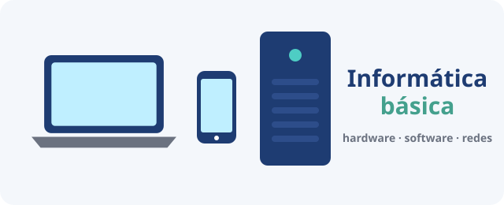

Informática básica para jóvenes
Entiende cómo funcionan los aparatos que usas cada día: hardware, software, archivos, redes y mucho más.
Informática básica · Módulo 0 de 12
Bienvenido/a 👋

Ordenadores, portátiles y móviles: por dentro funcionan igual.
Usas ordenadores y móviles a diario, pero ¿sabes qué hay dentro, qué es un sistema operativo o por qué tu disco «de 1 TB» no muestra 1000 GB? En este curso lo descubrirás con explicaciones sencillas, ilustraciones y ejercicios.
Objetivo: al terminar sabrás distinguir hardware y software, reconocer las piezas y periféricos, medir la información, organizar tus archivos, entender tu red de casa, cuidar tu equipo y leer la ficha técnica de un ordenador.
Itinerario
- 1️⃣ ¿Qué es un ordenador?
- 2️⃣ Hardware: el ordenador por dentro
- 3️⃣ Periféricos: entrada, salida y mixtos
- 4️⃣ Bits y bytes: medir la información
- 5️⃣ Almacenamiento: dónde se guardan tus archivos
- 6️⃣ Software: los programas
- 7️⃣ El sistema operativo
- 8️⃣ Archivos y carpetas
- 9️⃣ Redes e Internet
- 🔟 Cuidado y mantenimiento del equipo
- 1️⃣1️⃣ Elegir un ordenador: leer una ficha técnica
- 1️⃣2️⃣ Proyecto final: la ficha de tu equipo
- 🏁 Examen final (24 preguntas)
Reto inicial
Sin buscar en Internet: ¿qué crees que tiene dentro tu móvil para poder funcionar? Escribe todas las piezas que se te ocurran y compáralas al terminar el módulo 2.